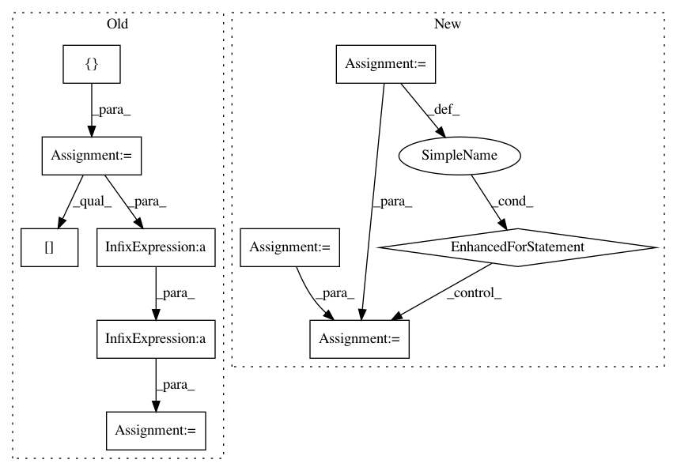

f47485cc4a21fb18564ede7ab0cc9001dbd0f1d9,chaospy/descriptives/sensitivity/main.py,,Sens_m,#,9
Before Change
dim = len(dist)
poly = setdim(poly, dim)
zero = [0]*dim
out = numpy.zeros((dim,) + poly.shape)
V = Var(poly, dist, **kws)
for i in range(dim):
zero[i] = 1
out[i] = Var(E_cond(poly, zero, dist, **kws),
dist, **kws)/(V+(V == 0))*(V != 0)
zero[i] = 0
return out
After Change
out = numpy.zeros((dim,) + poly.shape)
variance = Var(poly, dist, **kws)
valids = variance != 0
for idx, unit_vec in enumerate(numpy.eye(dim, dtype=int)):
conditional = E_cond(poly[valids], unit_vec, dist, **kws)
out[idx, valids] = Var(conditional, dist, **kws)
out[idx, valids] /= variance[valids]
return out
In pattern: SUPERPATTERN
Frequency: 3
Non-data size: 10
Instances
Project Name: jonathf/chaospy
Commit Name: f47485cc4a21fb18564ede7ab0cc9001dbd0f1d9
Time: 2020-06-10
Author: jonathf@gmail.com
File Name: chaospy/descriptives/sensitivity/main.py
Class Name:
Method Name: Sens_m
Project Name: tiberiu44/TTS-Cube
Commit Name: 2c6ce0ebfa9537246878e8fb9144e0c879fca17d
Time: 2018-10-22
Author: tibi@racai.ro
File Name: cube/models/vocoder.py
Class Name: BeeCoder
Method Name: synthesize
Project Name: jonathf/chaospy
Commit Name: f47485cc4a21fb18564ede7ab0cc9001dbd0f1d9
Time: 2020-06-10
Author: jonathf@gmail.com
File Name: chaospy/descriptives/sensitivity/total.py
Class Name:
Method Name: Sens_t